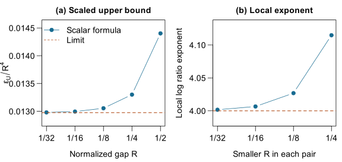
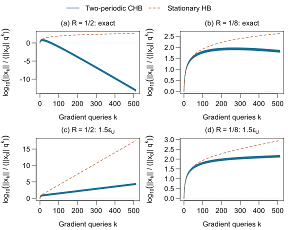
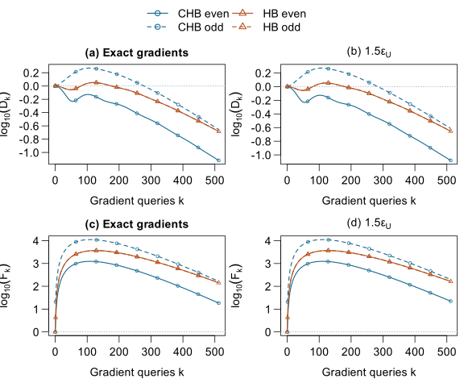

A uniform lower bound
A regularized quadratic energy controls history-dependent vector errors, including errors that mix Hessian eigenspaces. The estimate covers every iterate and is independent of dimension.
OPTIMIZATION · RESEARCH COMPANION
A fourth-power relative-error threshold
for two-periodic heavy ball.
A gap in the Hessian spectrum can accelerate a periodic method. We study the gradient accuracy needed to retain that asymptotic rate advantage as the gap closes.
An accuracy threshold at fixed
Hessian condition number κ.
Two alternating steps. One gap-dependent accuracy law.
01 THE RESULT
At a fixed condition number, the relative-error budget that preserves the benchmark-rate advantage has matching lower and upper orders as the spectral gap closes.
THRESHOLD THEOREM · SMALL SPECTRAL GAPS
For each fixed κ > 1 and sufficiently small positive R. The constants cκ and Cκ are explicit, positive and depend only on κ.
εcrit is the supremum of relative-error levels for which the uniform per-query rate stays strictly below the stationary heavy-ball benchmark:
q = (√κ − 1) / (√κ + 1).
Here κ = L/μ, with positive Hessian bounds μ and L. The error at each query obeys ‖ek‖ ≤ ε‖H(xk − x★)‖, where H is the Hessian, x★ the minimizer and k the query index. The current iterate is xk, its gradient error is ek, and ‖·‖ is the Euclidean norm.
A regularized quadratic energy controls history-dependent vector errors, including errors that mix Hessian eigenspaces. The estimate covers every iterate and is independent of dimension.
A scalar multiplicative error at a spectral endpoint gives a fourth-power obstruction for the same coefficients and rest initialization.
The result concerns retention of q. It does not identify a divergence threshold, an optimal leading constant or noise-dependent optimal coefficients.
The two-periodic coefficients come from Goujaud et al. (2022). This study quantifies their relative-error tolerance as the gap closes, with a uniform vector-error guarantee and a matching scalar upper order.
02 THE EVIDENCE
Three figures from the existing study. The computations illustrate the theory and the limits of a comparison at a fixed iteration horizon.

Read with care This checks the scalar upper obstruction. The worst-case vector-error threshold is a separate quantity.

Read with care An increasing normalized curve can still represent a convergent method. The noisy baseline is not optimized for the error level, and one selected error path does not establish worst-case robustness.

Exact-gradient normalized-distance ratio, CHB / HB. Lower values favor CHB.
Read with care Both exact-gradient objective gaps are still above initialization at query 512: F512 ≈ 18.38 for CHB and 142.46 for HB. This single raw-data Hessian illustrates phase effects; it cannot establish the fourth-power law or a general performance advantage.
03 REPRODUCIBILITY
The source archive includes the numerical kernels, fixed configurations, raw Yacht data, accepted records and reporting scripts. Start by checking the saved records; then regenerate the reporting tables and figures.
Python 3.13.5 · mpmath 1.3.0
R 4.6.0 with Cairo, for figures
cd periodic-momentum
python3 -m venv .venv
.venv/bin/python -m pip install -r requirements.txt
# Validate saved records; no optimizer updates
.venv/bin/python scripts/reproduce.py check --out outputs/check_01
# Recreate reporting data and figures
.venv/bin/python scripts/reproduce.py export --out outputs/report_01
.venv/bin/python scripts/reproduce.py figures --analysis outputs/report_01 --out outputs/figures_01Use an existing environment with mpmath 1.3.0 if preferred. Figure rendering requires R with Cairo. Each output directory must be new.
13 + 16Synthetic work units + Yacht records checked
5 + 2CSV reports + JSON diagnostics matched
8 updatesFour state transitions + four gradient updates
3 figuresDrawing content matched the manuscript
Verification covers saved-output reporting and selected two-step prefixes. The adapted complete numerical replay has not been run end to end. The guide documents its separate command and the limits of the checks.
04 STUDY NOTES
The theorem is asymptotic in the gap. The numerical illustrations are finite and retain their original design.